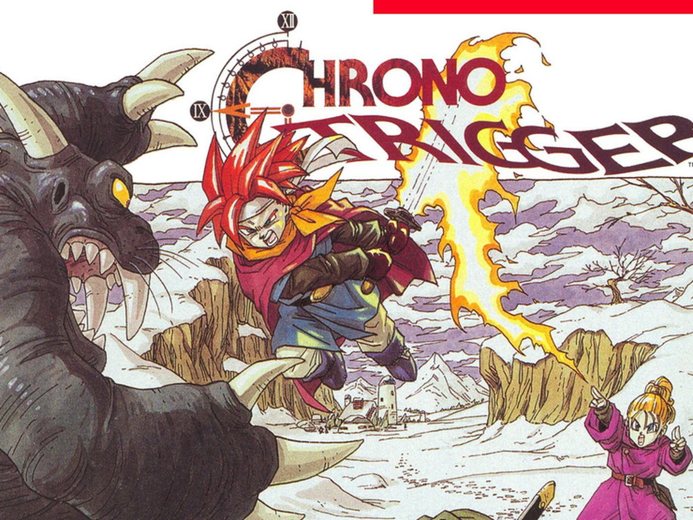
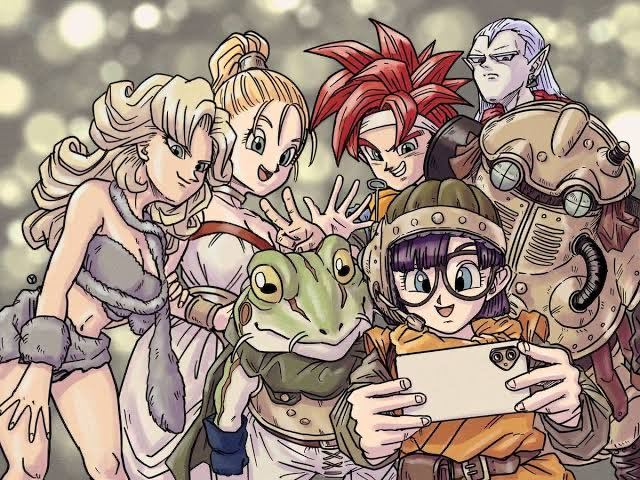

Chrono Trigger is a 1995 role-playing video game developed and published by Square. It was originally released for the Super Nintendo Entertainment
System as the first entry in the Chrono series. The game's development team included three designers that Square dubbed the "Dream Team":
Hironobu Sakaguchi, creator of Square's Final Fantasy series; Yuji Horii, creator of Enix's Dragon Quest series; and Akira Toriyama, character
designer of Dragon Quest and author of the Dragon Ball manga series. In addition, Takashi Tokita co-directed the game and co-wrote the scenario,
Kazuhiko Aoki produced the game, while Masato Kato wrote most of the story. The game's plot follows a group of adventurers who travel through time to
prevent a global catastrophe.
Nintendo Power magazine described aspects of the game as revolutionary, including its multiple endings, plot-related side-quests focusing on character development,
unique battle system, and detailed graphics. The game's soundtrack, scored by Yasunori Mitsuda with assistance by veteran Final Fantasy composer Nobuo Uematsu,
has been hailed as one of the best video game soundtracks of all time. Chrono Trigger was the second best-selling game of 1995 in Japan, and the various
incarnations of the game have shipped more than 3.5 million copies worldwide.
Unlike most other role-playing games at the time, combat in Chrono Trigger occurs in the same area where general navigation occurs, with all enemies visible on screen.
Chrono Trigger was conceived in October 1992 by Hironobu Sakaguchi, producer and creator of the Final Fantasy series; Yuji Horii, writer, game designer and creator of the Dragon Quest series; and Akira Toriyama, character designer of Dragon Quest and creator of the Dragon Ball manga series. Traveling to the United States to research computer graphics, the three, that Square dubbed the "Dream Team", decided to create something that "no one had done before". Toriyama's editor, Kazuhiko Torishima, later credited the concept to a fusion of "Dragon Quest plus Final Fantasy", and arranged for Enix to lend Yuji Horii to Squaresoft for development.
After spending over a year considering the difficulties of developing a new game, the three received a call from Kazuhiko Aoki, who offered to produce.
The four met and spent four days brainstorming ideas for the game. Square convened between 50 and 60 developers, including scenario writer Masato Kato,
whom Square designated story planner; development started in early 1993. An uncredited Square employee suggested that the team develop a time
travel-themed game, which Kato initially opposed, fearing repetitive, dull gameplay. Kato and Horii then met several hours per day during the first
year of development to write the game's plot; Horii desired a silent protagonist from the outset. Square intended to license the work under the Mana
franchise and gave it the working title Maru Island; Hiromichi Tanaka (the future producer of Chrono Cross) monitored Toriyama's early designs. The team
hoped to release it on Nintendo's planned Super Famicom Disk Drive; when Nintendo canceled the project, Square reoriented the game for release on a Super
Famicom cartridge and rebranded it as Chrono Trigger. Tanaka credited the ROM cartridge platform for enabling seamless transition to battles on the field
map. While Chrono Trigger had been planned for a 24-megabit cartridge, Square ultimately chose a 32-megabit platform, enabling additional graphics and
music. Torishima later reflected that at least one early revision of the game had been scrapped.
Aoki ultimately produced Chrono Trigger, while director credits were attributed to Akihiko Matsui, Yoshinori Kitase and Takashi Tokita. Toriyama
designed the game's aesthetic, including characters, monsters, vehicles, and the look of each era. Masato Kato also contributed character ideas and
designs. Kato planned to feature Gaspar as a playable character and Toriyama sketched him, but he was cut early in development. The development staff
studied the drawings of Toriyama to approximate his style. Sakaguchi and Horii supervised; Sakaguchi was responsible for the game's overall system and
contributed several monster ideas. Other notable designers include Tetsuya Takahashi, the graphic director, and Yasuyuki Honne, Tetsuya Nomura, and Yusuke
Naora, who worked as field graphic artists. Yasuhiko Kamata programmed graphics, and cited Ridley Scott's visual work in the film Alien as an inspiration
for the game's lighting. Kamata made the game's luminosity and color choice lay between that of Secret of Mana and the Final Fantasy series. Features
originally intended to be used in Secret of Mana or Final Fantasy IV, also under development at the same time, were appropriated by the Chrono Trigger
team. According to Tanaka, Secret of Mana (which itself was originally intended to be Final Fantasy IV) was codenamed "Chrono Trigger" during development
before being called Seiken Densetsu 2 (Secret of Mana), and then the name Chrono Trigger was adopted for a new project. After its release, the development
team of Final Fantasy VI was folded into the Chrono Trigger team.
The game was a best-seller in Japan, where two million copies were sold in only two months. It ended the year as the second best-selling game of
1995 in Japan, below Dragon Quest VI: Realms of Revelation. Chrono Trigger was also met with substantial success upon release in North America,
and its re-release on the PlayStation as part of the Final Fantasy Chronicles package topped the NPD TRSTS PlayStation sales charts for over six weeks.
By March 2003, the game's SNES and PS1 iterations had shipped 2.65 million copies worldwide, including 2.36 million in Japan and 290,000 abroad.
The PS1 version was re-released in 2003 as part of Sony's Greatest Hits line. The original SNES version had sold 2.5 million copies by 2006.
Chrono Trigger DS sold 790,000 copies worldwide, as of March 2009, including 490,000 in Japan, 240,000 in North America and 60,000 in Europe.
The SNES, PS1 and DS versions shipped a combined 3.44 million copies worldwide by March 2009. Excluding the PC version, the game had shipped over 3.5
million copies worldwide by February 2018.
Chrono Trigger inspired several related releases; the first were three games released for the Satellaview on July 31, 1995. They included Chrono Trigger:
Jet Bike Special, a racing video game based on a minigame from the original; Chrono Trigger: Character Library, featuring profiles on characters and
monsters from the game; and Chrono Trigger: Music Library, a collection of music from the game's soundtrack. The contents of Character Library and Music
Library were later included as extras in the PlayStation rerelease of Chrono Trigger. Production I.G created a 16-minute OVA, Dimensional Adventure Numa
Monjar, which was shown at the Japanese V Jump festival of July 31, 1996.